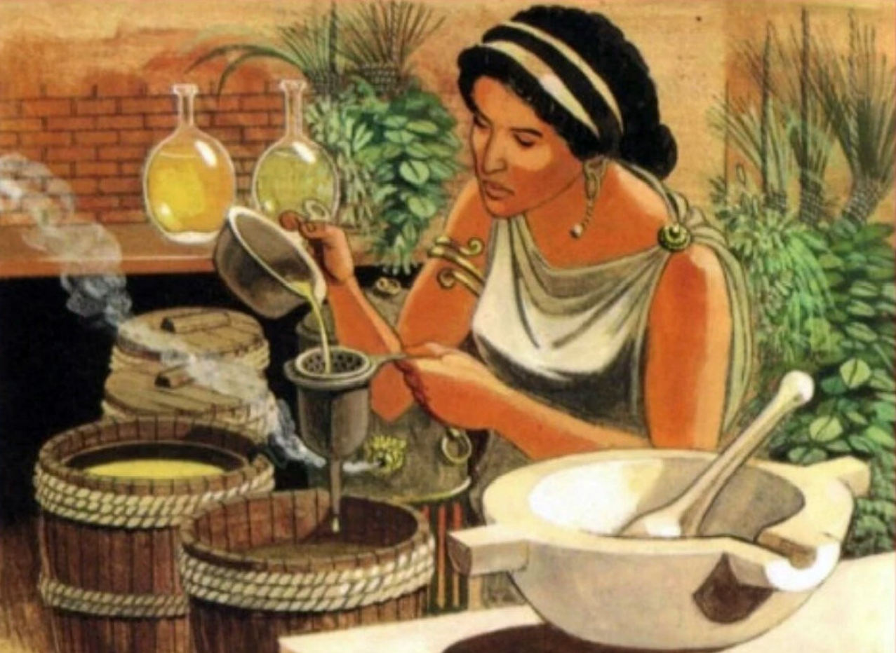

Mango Skin – селективная парфюмерная вода с фруктово-цветочным ароматом для женщин и мужчин, созданная в 2018 году американским парфюмерным брендом Vilhelm Parfumerie. Нежный, манящий, солнечный аромат – стильная летняя композиция, которая построена вокруг чарующего запаха сладкой мякоти и кожицы манго в окружении освежающих цитрусов и изысканного цветочного букета.

Carolina Herrera Good Girl - аромат для женщин, выпущенный брендом Carolina Herrera в 2016 году. Композиция относится к классам восточные, ориентальные, цветочные, её автором является парфюмер Луиза Тёрнер (Louise Turner). Начальные ноты аромата - кофе, миндаль, лимон и бергамот; ноты сердца - тубероза, жасмин самбак, болгарская роза, ирис и цветы апельсина; базовые ноты - какао, бобы тонка, ваниль, сандал, корица, конфеты Praline, кашемировое дерево, белый кедр, амбра, пачули и мускус.
Pour Femme Intense –парфюмерная вода класса-люкс с цветочным древесно-мускусным ароматом для женщин, созданная в 2018 году парфюмером Olivier Cresp для модного бренда Lacoste из Франции. Особенный утонченный и в то же время чувственный аромат Pour Femme Intense – это мелодия любви и страсти, невероятная история женственного образа, сотканная из тончайших ароматических нюансов. Верхние ноты: карамель, средние ноты: дамасская роза, базовые ноты: сандал, мускус, гималайский кедр.